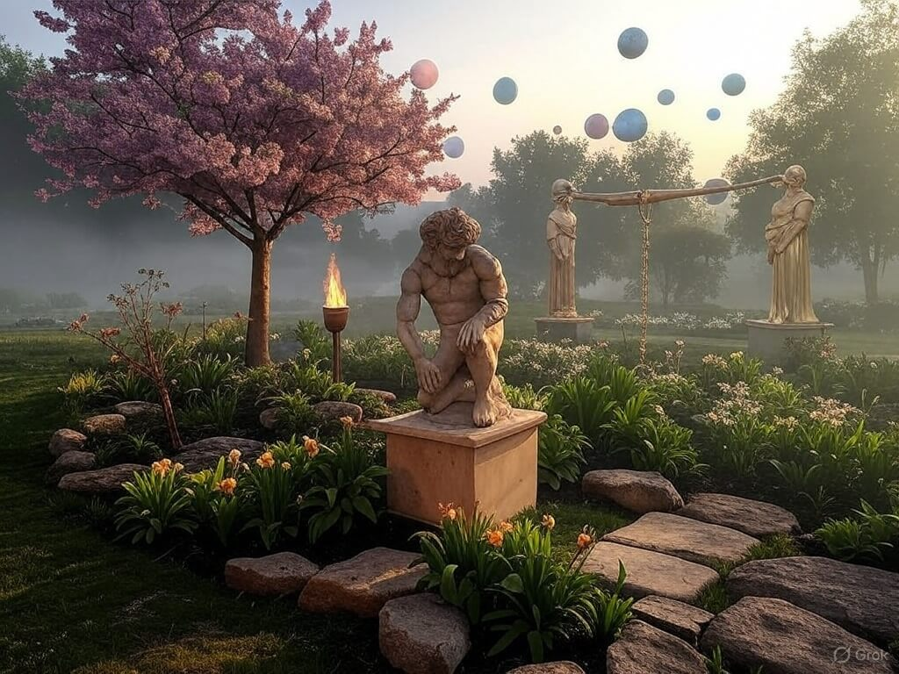

Grande Fresque des Nuages
Flânez sous la fresque du Refuge, laissez-vous inspirer par la douceur, la lumière et la poésie des cieux intérieurs.

« Sous ce nuage, la danse des sphères invite à la rêverie. »

« Quand le ciel s'ouvre, la révélation descend comme une pluie de lumière. »

« Ici, la magie du refuge relie tous les mondes intérieurs. »

« Sous le cerisier sacré, la paix s'installe et le temps suspend son vol. »

« Chaque nuage porte en lui la promesse d'une métamorphose. »

« De la brume naît l'émergence d'un nouveau monde. »

« La lumière intérieure éclaire le chemin du retour à soi. »

« Dans le silence du ciel, tout devient possible. »

« La présence sacrée se révèle dans la douceur d'un nuage. »

« Le flux de conscience circule, reliant chaque être à l'infini. »

« L'harmonie sacrée unit les couleurs du ciel et les rêves du cœur. »